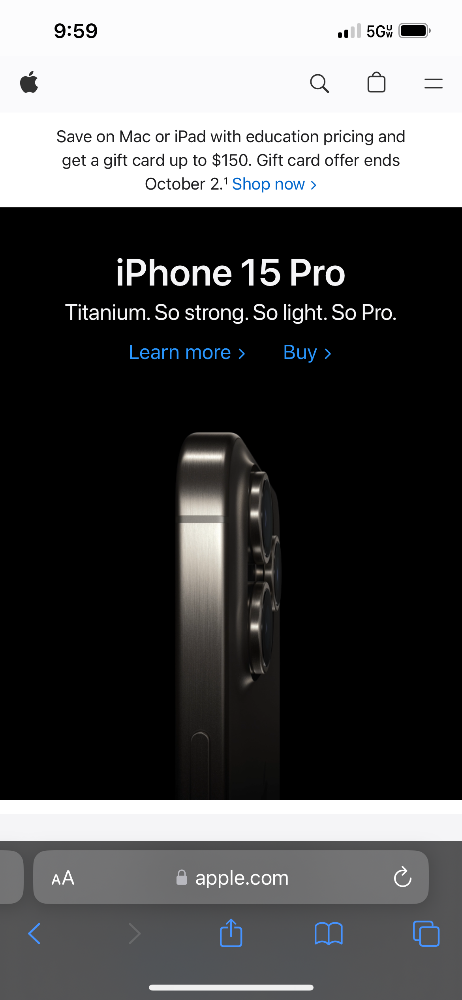

Visual Hierarchy
Apple
apple.com Apple's website is a prime example of Visual Hierarchy. They show you what is most important, and what they most want you to take action on. At the top of the screen, we see a simple logo, then immediately the promotion that they want you to take action on. Followed by the next important urgency scare which is their newest release, the iPhone 15 and how to learn more about it, then also buy it. They are showing not telling what is most important.
PARC: Alignment
Open Ai
openai.comOpen AI follows a Z approach to their placement, and a left align for their text. They do this all over there website, but it is best shown on their front home page. This takes advantage of the fact that people tend to read websites in an F style. As people scan down the left side of the webpage, they will see all the content that they want them to see.
Fitt's Law
Marriot
marriott.comMarriot's website is an excellent example of fitt's law. They make the time it takes to make a reservation very quick. Furthermore, they make the proximity of the location information very easy by placing it at the top of the website, but not as close as the reserve now button, because that is where your finger naturally lies on mobile.